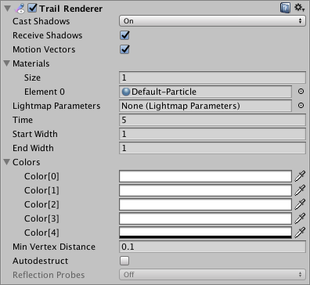

Trail Renderer
The Trail Renderer is used to make trails behind GameObjects in the Scene as they move.

Properties
| Property: | Function: |
|---|---|
| Cast Shadows | Determines whether the trail casts shadows, whether they should be cast from one or both sides of the trail, or whether the trail should only cast shadows and not otherwise be drawn. See Renderer.shadowCastingMode in the Scripting API reference documentation to learn more. |
| Receive Shadows | If enabled, the trail receives shadows. |
| Motion Vectors | Select the Motion Vector type to use for this Trail Renderer. See Renderer.motionVectorGenerationMode in the Scripting API reference documentation to learn more. |
| Materials | These properties describe an array of Materials used for rendering the trail. Particle Shaders work best for trails. |
| Lightmap Parameters | Reference a Lightmap Parameters Asset here to enable the trail to interact with the global illumination system. |
| Time | Define the length of the trail, measured in seconds. |
| Min Vertex Distance | The minimum distance between anchor points of the trail (see Minimum vertex separation below). |
| AutoDestruct | Enable this to destroy the GameObject once it has been idle for Time seconds. |
| Width | Define a width value and a curve to control the width of your trail at various points between its start and end. The curve is applied from the beginning to the end of the trail, and sampled at each vertex. The overall width of the curve is controlled by the width value. |
| Color | Define a gradient to control the color of the trail along its length. |
| Corner Vertices | This property dictates how many extra vertices are used when drawing corners in a trail. Increase this value to make the trail corners appear rounder. |
| End Cap Vertices | This property dictates how many extra vertices are used to create end caps on the trail. Increase this value to make the trail caps appear rounder. |
| Alignment | Set to View to make the Trail face the camera, or Local to align it based on the orientation of its Transform component. |
| Texture Mode | Control how the Texture is applied to the Trail. Use Stretch to apply the Texture map along the entire length of the trail, or use Wrap to repeat the Texture along the length of the Trail. Use the Tiling parameters in the Material to control the repeat rate. |
| Generate Lighting Data | When enabled, the trail geometry includes Normals and Tangents. This allows the trail to use Materials that use the scene lighting, for example via the Standard Shader, or by using a custom shader. |
| Light Probes | Probe-based lighting interpolation mode. |
| Shadow Bias | Move shadows along the direction of the light to remove shadowing artifacts caused by approximating a volume with billboarded geometry. |
| Sorting Layer | Name of the Renderer’s sorting layer. |
| Order in Layer | This Renderer’s order within a sorting layer. |
| Reflection Probes | If enabled and reflection probes are present in the Scene, a reflection Texture is picked for this Trail Renderer and set as a built-in Shader uniform variable. |
Details
The Trail Renderer renders a trail of polygons behind a moving GameObject. This can be used to give an emphasized feeling of motion to a moving object, or to highlight the path or position of moving objects. A trail behind a projectile adds visual clarity to its trajectory; contrails from the tip of a plane’s wings are an example of a trail effect that happens in real life.
A Trail Renderer should be the only renderer used on the attached GameObject. It is best to create an empty GameObject, and attach a Trail Renderer as the only renderer. You can then parent the Trail Renderer to whatever GameObject you would like it to follow.
Materials
A Trail Renderer component should use a Material that has a Particle Shader. The Texture used for the Material should be of square dimensions (for example 256x256, or 512x512). The trail is rendered once for each Material present in the array.
Minimum vertex separation
The Min Vertex Distance value determines how far an object that contains a trail must travel before a segment of that trail is solidified. Low values like 0.1 create trail segments more often, creating smoother trails. Higher values like 1.5 create segments that are more jagged in appearance. There is a slight performance trade-off when using lower values/smoother trails, so try to use the largest possible value to achieve the effect you are trying to create. Additionally, wide trails may exhibit visual artifacts when the vertices are very close together and the trail changes direction significantly over a short distance.
Hints
- Use Particle Materials with the Trail Renderer.
- Trail Renderers must be laid out over a sequence of frames; they cannot appear instantaneously.
- Trail Renderers rotate to display the face toward the camera, similar to other Particle Systems.
- Unity samples colors from the Color Gradient at each vertex. Between each vertex, Unity applies linear interpolation to colors. Adding more vertices to your Line Renderer might give a closer approximation of a detailed Color Gradient.
Trail Renderer example setup